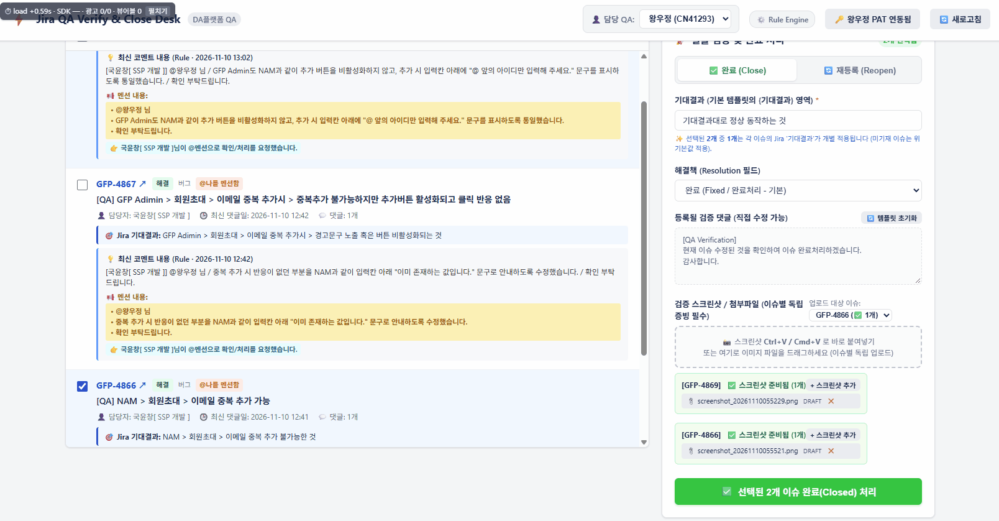
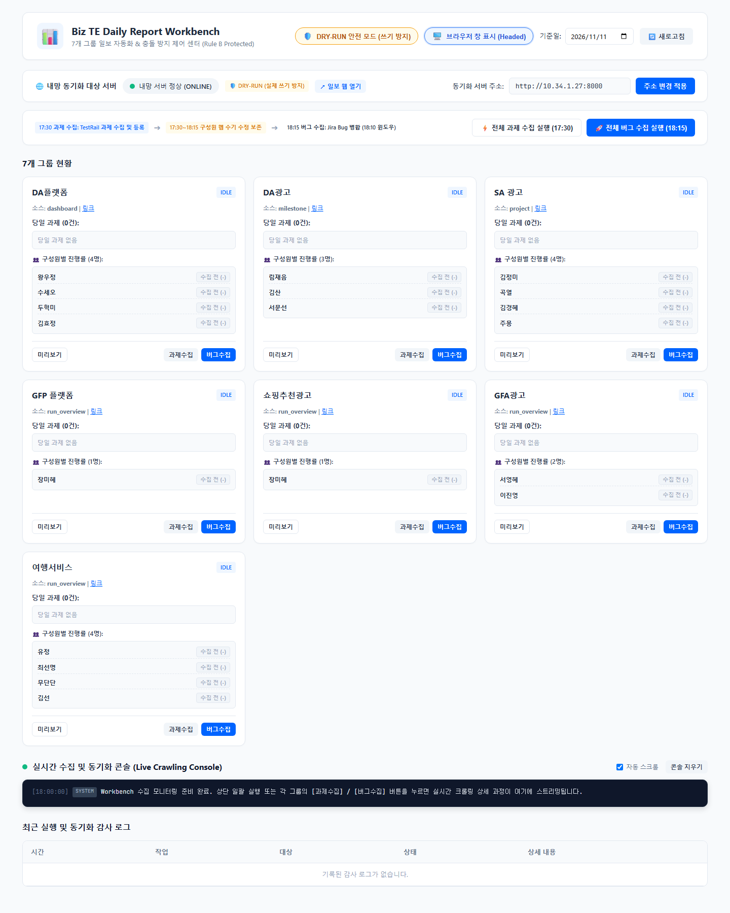
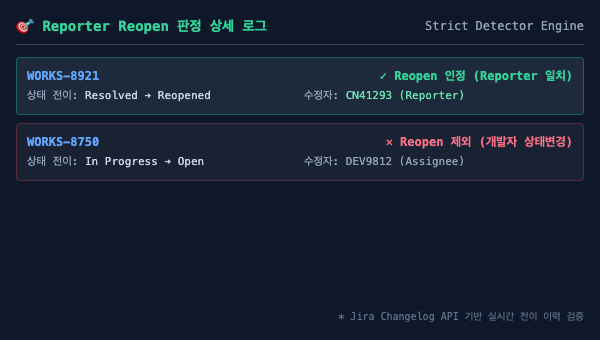
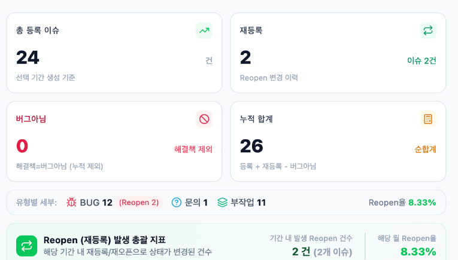
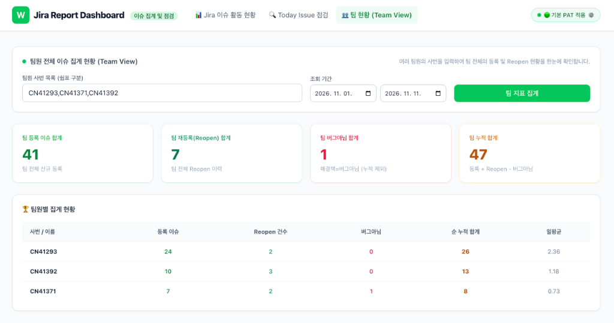
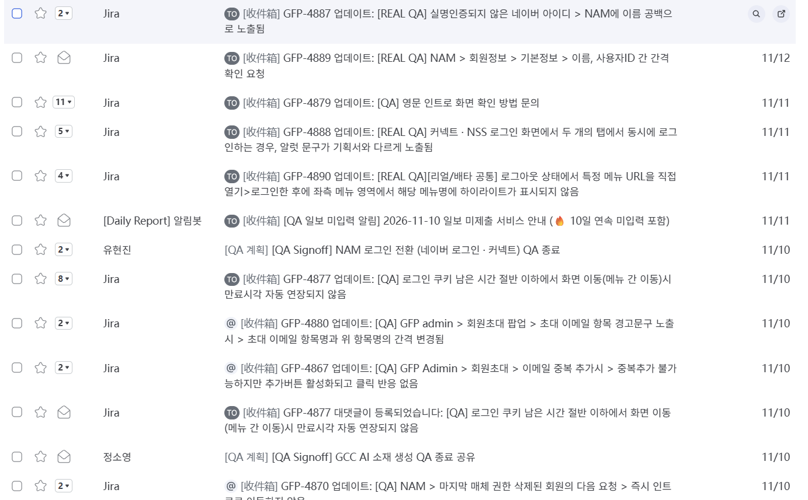
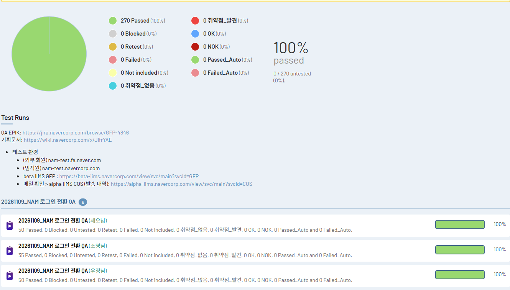
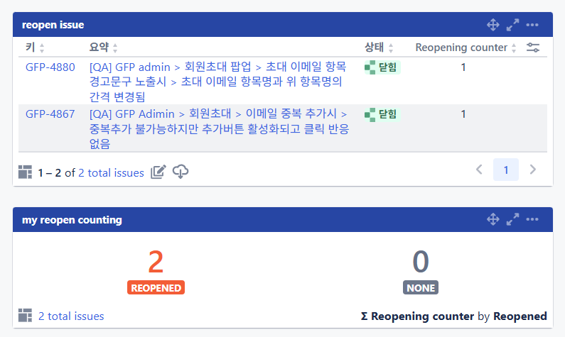
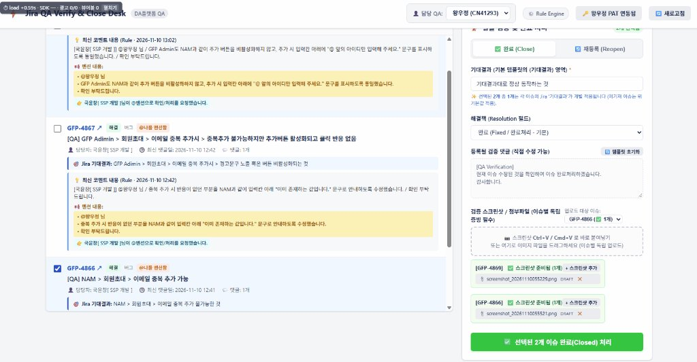
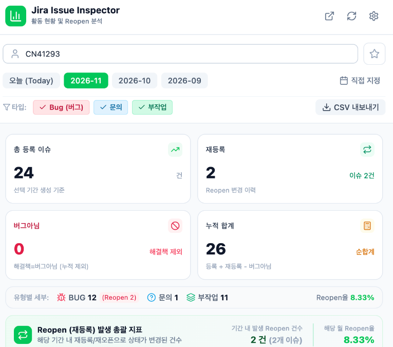

STAGE 1
수정 확인 및 이슈 종료
Jira QA Verify & Close Desk
전날 해결된 이슈를 메일 대신 Work Desk에서 바로 확인하고 안전하게 일괄 종료합니다.
전날 해결된 이슈를 메일 대신 Work Desk에서 바로 확인하고 안전하게 일괄 종료합니다.
마감 시점에 TestRail 진행률 & Jira 24시간 이슈를 자동으로 모아 Daily Report 취합 툴로 동기화합니다.
5초 만에 KPI 대시보드에서 필요한 수치를 확인하고 Team
View와 CSV로 정리합니다.
크롬 확장 프로그램으로 Jira 화면에서 바로 KPI를 확인할
수도 있습니다.










이슈 확인, 증적 처리 및 종료 작업 간소화
7개 프로젝트 데이터 취합 및 보고서 작성
동일한 기준으로 월간 품질 지표 조회 및 비교
“도구는 셋, 기준은 하나.”